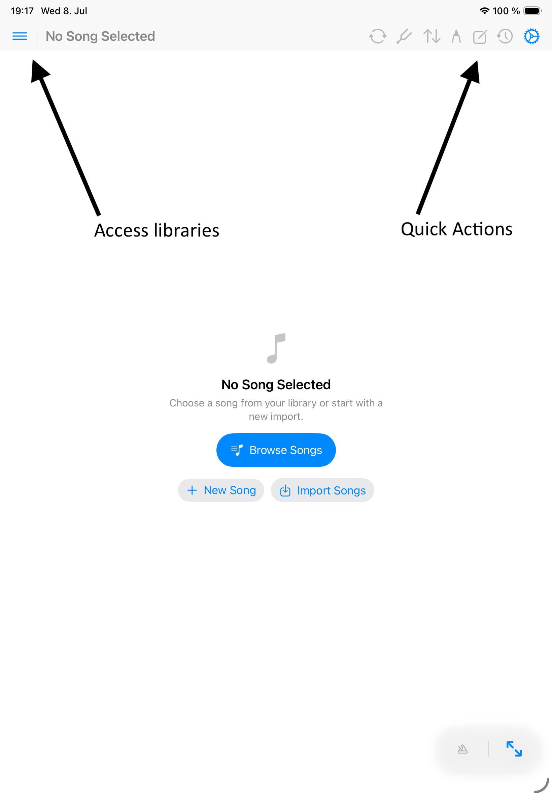
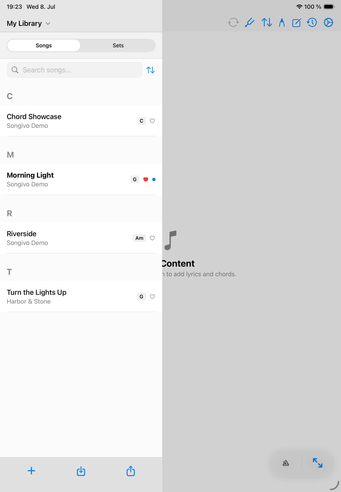
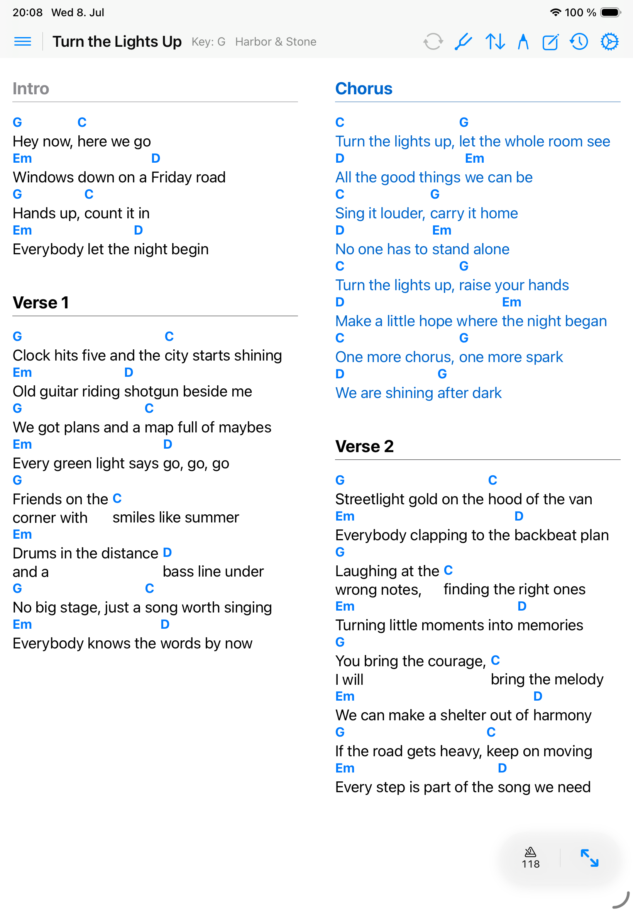

Start here
Getting Started
Songivo is built to provide you with the best experience for accessing and managing your Songbook.
Start in My Library for personal songs. Use the song viewer for rehearsal, then add setlists, annotations, and performance tools as your library grows.

First useful setup
- Open the library and confirm the correct library context is selected.
- Start with the bundled demo songs or import one ChordPro, text, PDF, image, or SongBook Pro file.
- Open a song and check title, artist, key, BPM, duration, song number, and tags.
- Create a setlist when you need a rehearsal or show order instead of renaming songs.
- Open Settings once to review sync, appearance, editor fields, metronome, and purchase status.

Main areas
LibrarySearch, filter, favorite, copy, export, and open songs in the selected library.
ViewerRead ChordPro or PDF charts with transpose, tuner, annotation, and live controls nearby.
SetlistsBuild the order for rehearsal or a show, including slot notes and per-slot transpose choices.
SettingsManage appearance, sync, band libraries, purchases, metronome sounds, and diagnostics.

Good setup habits
- Add metadata early, especially artist, key, BPM, duration, song number, and tags.
- Keep My Library and band libraries separate unless you intentionally copy material between them.
- Use setlists for performance order instead of changing song titles for each event.
- Open important songs before the show to confirm font size, scroll speed, notes, and PDF zoom.